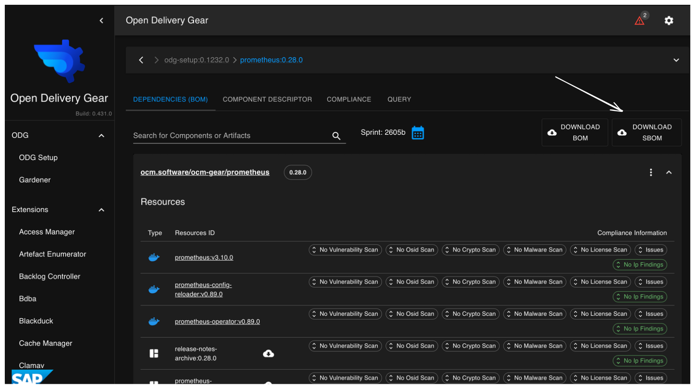
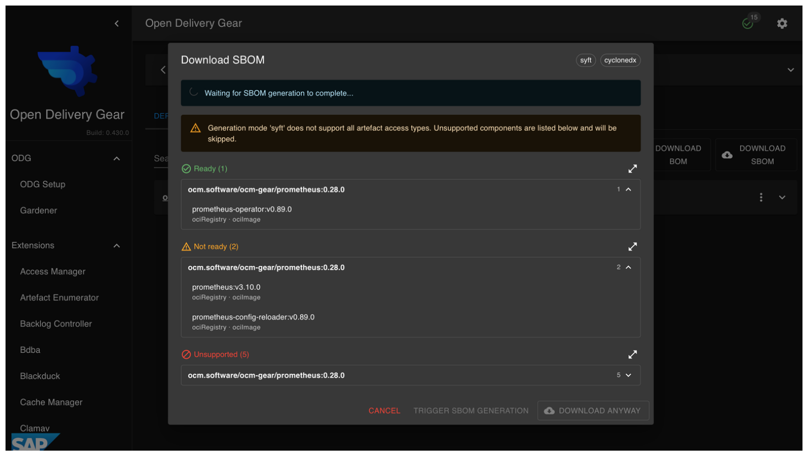
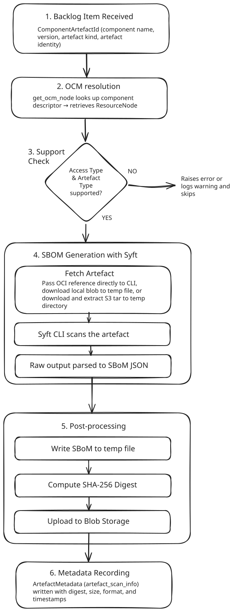

SBOM-Generator
The SBOM-Generator extension generates Software Bill of Materials (SBoM) documents for the OCM resources of your components. It uses Syft to scan artefacts directly, and stores the generated SBoMs in the ODG blob storage. SBoMs can be downloaded from the ODG Dashboard or via API.
How-to Guides
Users
How do I download SBoM documents for my product or its sub-components?
Add your product to the ODG Dashboard.
Open your product page.
To download the SBoM for your product, click the
DOWNLOAD SBOMbutton.
This opens the SBoM popover, where all sub-components are grouped into two sections: Ready and Not ready.

The popover also shows the configured output format, and displays the access type and artefact type for each sub-component.
Hint
The popover updates in real time. No manual refresh is needed.
To download the SBoM for a specific sub-component, open the sub-component first, then click the
DOWNLOAD SBOMbutton.
How can I manually trigger SBoM generation for a component?
Open the DOWNLOAD SBOM popover for your component. Any sub-components whose
SBoM has not been generated yet appear in the Not ready section. When there
are pending sub-components, a Trigger SBOM generation button is shown.
Clicking it schedules SBoM generation for all of them immediately. The popover
updates in real time, and completed SBoMs move from Not ready to Ready
as they finish.
Operators
How do I diagnose a failed SBoM generation?
Open the SBOM-Generator section in the ODG Dashboard sidebar. The logs show the status of each run, including errors, warnings, and timestamps, making it straightforward to identify and diagnose issues.
Reference
Configuration
The extension is configured under the sbom_generator key.
sbom_generator:
enabled: True
delivery_service_url: http://delivery-service:5000
output_format: cyclonedx # or 'spdx'
interval: 86400 # re-scan every 24 hours
mappings:
- prefix: '' # matches all components
aws_secret_name: ~ # AWS secret name (required for S3 artefacts)
Top-level options
Option |
Type |
Default |
Description |
|---|---|---|---|
|
bool |
|
Enable or disable the extension. |
|
string |
— |
URL of the delivery service instance. |
|
string |
|
Output format: |
|
int (seconds) |
|
Maximum time before an artefact is re-scanned. |
|
list |
|
Per-prefix component mappings. See mapping fields below. |
Mapping fields (each entry in mappings)
Option |
Type |
Required |
Description |
|---|---|---|---|
|
string |
yes |
Component name prefix. Use |
|
string |
no |
Name of the AWS secret used to access S3 artefacts. Required when multiple AWS secrets are configured. |
How it works
When a component is picked up for scanning, the SBOM-Generator resolves its
component descriptor from the configured OCM repositories, retrieves each
Resource, and scans it using the Syft CLI binary via subprocess.
For ociRegistry resources, the image reference is passed directly to the
CLI. For localBlob/v1, the blob is downloaded to a temporary file first.
For s3, the tar archive is downloaded and extracted to a temporary directory
before scanning.
Once the SBoM is produced, it is serialised to JSON, hashed (SHA-256), and
uploaded to the delivery-service blob storage. The digest, file size, and
output format are recorded as ArtefactMetadata of type
artefact_scan_info for that resource, which is what the dashboard queries
to determine whether an SBoM is ready for download.
The diagram below shows the end-to-end generation flow:
